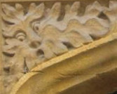
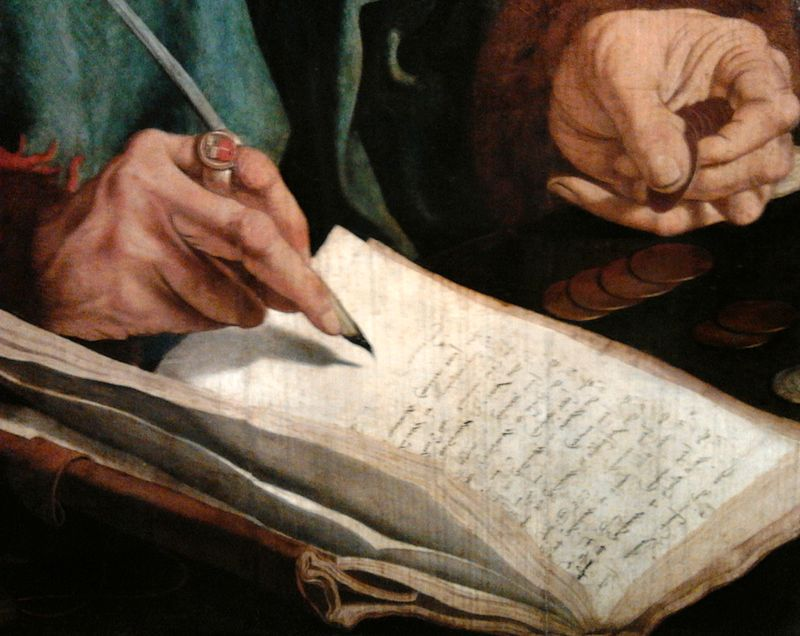
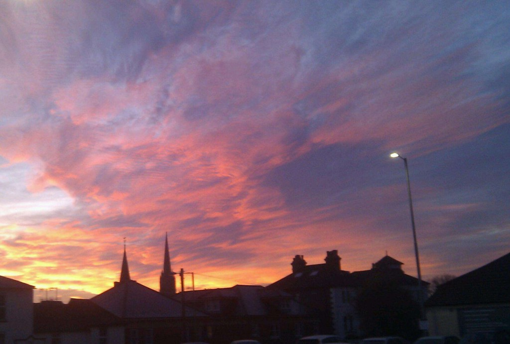
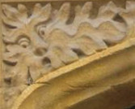
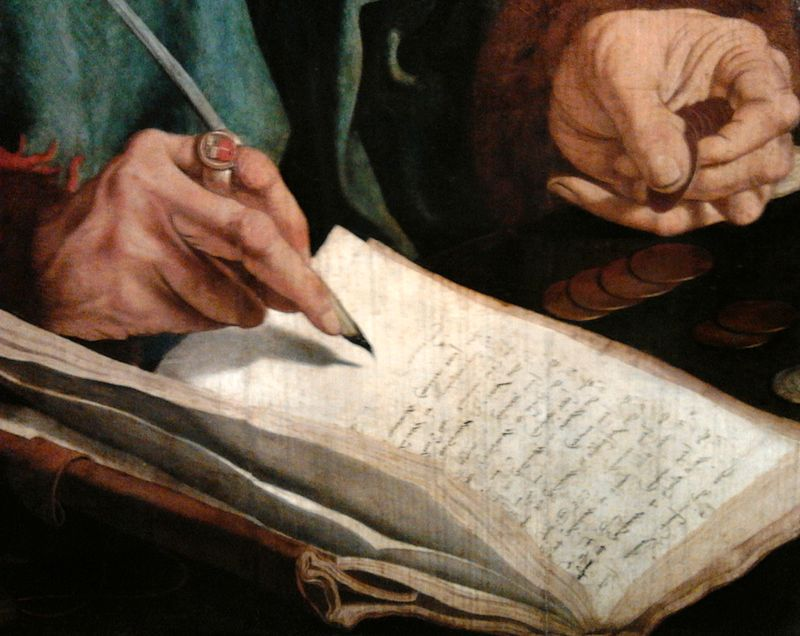
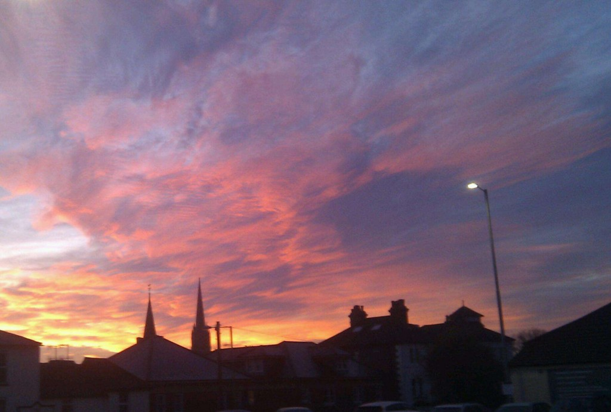
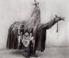
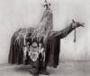

Photo credits:
The Soviet stamp, which links through to email was scanned and processed by A. Sdobnikov (Personal collection) [Public domain], via Wikimedia Commons
The twitter-y blue bird is by Faldrian (Own work) [CC-BY-SA-3.0], via Wikimedia Commons
The Chelsea badge is from the Chelsea website. I'm a member. This doesn't mean that I have the right to the image. But I'm guessing Mr Abramovich won't mind.
The picture of Stonehenge which links to the 'On This Day' list on my wesbite was taken by me at Winter Solstice in 2012, I think
The boy and girl are a detail from the poster for a Salisbury Studio production of Romeo and Juliet.
The Red Lion is a photo from the Inn in Salisbury. I took it
The 'Hob Nob'is from an old postcard which I scanned
The paper.li logo is taken from their website. I'm assuming they won't mind
The RSS icon is by Jessekoeckhoven (Own work) [CC0], via Wikimedia Commons
The Pinboard is a detail from a photo by Sampsonchen (Own work) [CC-BY-SA-3.0], via Wikimedia Commons
The Wikimedia notebook is By Rock drum (Own work) [CC-BY-SA-3.0], via Wikimedia Commons
The picture of Stamford Bridge is also from the Chelsea wbesite
The picture of Brian Lara is By Ukexpat (Own work) [GFDL or CC-BY-SA-3.0-2.5-2.0-1.0], via Wikimedia Commons
And the monads psychedlic-looking illustration is By Sednin Nikolai (www.sednin.com) [CC-BY-SA-3.0], via Wikimedia Commons
The note taking detail is from Marinus van Reymerswale (circa 1490/1495–1546?) [Public domain], via Wikimedia Commons
The painting of the Four Season Paying Homage to Chronos is by Bartolomeo Altomonte [Public domain], via Wikimedia Commons
The beautiful picture of the Mountain Bluebird is by By Elaine R. Wilson (NaturesPicsOnline) [CC-BY-SA-2.5], via Wikimedia Commons
The old-style radio mike is By Alvar_Lidell.jpg: Liftarnderivative work: Mattgirling (Alvar_Lidell.jpg) [CC BY-SA 3.0], via Wikimedia Commons
The silver four is By Procsilas Moscas (Flickr) [CC BY 2.0], via Wikimedia Commons
The number two is "This work is in the public domain in the United States because it is a work prepared by an officer or employee of the United States Government as part of that person’s official duties under the terms of Title 17, Chapter 1, Section 105 of the US Code." See File:Award numeral 2.svg - Wikimedia Commons
The hand, signifying number 5 is By Dcbelanger (Own work) [Public domain], via Wikimedia Commons
The detail form the Mae West film poster is See page for author [Public domain], via Wikimedia Commons
'Jeune femme en toilette de bal' represents 'Posh Functions' and is by Berthe Morisot [Public domain or Public domain], via Wikimedia Commons
The pearls are By Mauro Cateb (Own work) [CC BY-SA 3.0], via Wikimedia Commons
The flaming microphone is By Hogie666 (Own work) [CC BY-SA 4.0], via Wikimedia Commons
The Linux penguin is by Larry Ewing <lewing@isc.tamu.edu> [Attribution], via Wikimedia Commons
The 'T' for Telegraph is By Gaspard (Own work (Original text: selbst erstellt)) [Public domain], via Wikimedia Commons
The Newspapers are By Harshil Shah from London, UK (Lisboa - NewspapersUploaded by tm) [CC BY-SA 2.0], via Wikimedia Commons
The electronics are By Alan Benzie (originally posted to Flickr as noise makers) [CC BY 2.0], via Wikimedia Commons
The 'x' is By Acf (Own work) [GFDL or CC BY-SA 3.0], via Wikimedia Commons
The sweets are By Dave Spellman from Lancashire, UK (Sweet Fest!) [CC BY 2.0], via Wikimedia Commons
 





 
